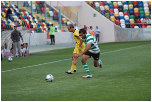

Serranos empatam nos Açores no fecho da II Liga
A deslocação ao campo do Santa Clara deu em empate a uma bola na última jornada do campeonato.
O Sporting da Covilhã fechou a participação na II Liga deste ano com um empate a uma bola no terreno do Santa Clara. O empate permitiu aos açorianos terminar o campeonato numa posição acima dos “leões da Serra”, que se classificaram em 16.º, ambos com 48 pontos.
Os da casa chegaram ao golo cedo, à passagem do minuto 11. Através da marcação de um pontapé de canto, Hugo Santos desviou a bola para o fundo da baliza, ao segundo poste.
O empate chegou ainda na primeira parte, aos 31 minutos, quando Carlos Manuel cobrou um livre direto e, com um pontapé forte, bateu o guardião Serginho.
Também de bola parada, Pedro Cervantes levou perigo à baliza serrana, com a bola a passar por cima da barra de Taborda.
A etapa complementar ficou marcada pelo futebol jogado pelo Santa Clara, mais atacante do que o opositor. Depois de desperdiçar um lance de golo por JP, contou com mais uma oportunidade, desta feita ao minuto 79, quando um remate em arco saiu por cima da baliza.
A cinco minutos do final, Pedro Cervantes endossou a bola a João Pedro que apenas conseguiu rematar à figura do guarda-redes Taborda.
Com este resultado, ficam seladas as contas da II Liga, ganha pelo Moreirense. O FC Penafiel assegura o outro lugar que garante a subida de divisão, enquanto o Atlético é despromovido.
Quanto ao Sporting da Covilhã, termina a época com 13 vitórias, nove empates e 20 derrotas. Na próxima época, volta a competir no segundo mais importante campeonato do futebol português.
publicado em: quarta-feira, 14 de Maio de 2014